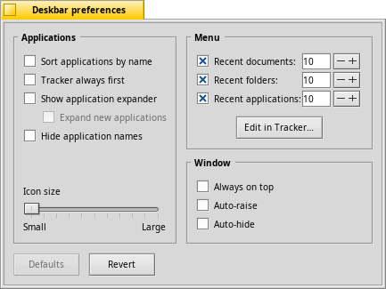
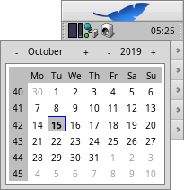

| Enhavtabelo |
|
Menuo de la Laborstrio La pleto La listo de rulantaj programoj |
La Laborstrio (Deskbar)
La Laborstrio estas malgranda panelo kiu dekomence lokiĝas en supra dekstra angulo de ekrano. Tio estas versio de Hajko por la Taskostrio de Vindozo kun ĝia butono "Lanĉi". Ĝi entenas menuon de la Laborstrio per kiu vi povas lanĉi programojn kaj agordilojn, pleton kun horloĝo kaj aliaj rimedoj, kaj sube lokiĝas listo de nun rulantaj programoj.

Vi povas movi la Laborstrion en iun ajn angulon aŭ kiel lineo lokigi laŭlonge de suba aŭ supra ekrana limo. Kroĉu aspran areon ĉe maldekstra flanko de la pleto (rigardu sagetojn supre) kaj trenu & ĵetu la Laborstrion sur deziratan lokon.
Ankaŭ vi povas faldi ĝin en kompaktan formon. Trenu la aspran areon sur menuon de la Laborstrio. Alto de panelo egalos al alto de titollangeto, do fenestroj de programoj en plenekrana reĝimo ne ŝirmos la Laborstrion kun la pleto kun horloĝo kaj piktogramoj.
Kroĉante aliflankan aspran areon kaj trenante ĝin horizontale vi povas ŝanĝi vaston de la Laborstrio:

Pli vasta la Laborstrio permesas havi pli da piktogramoj en la pleto per sola ĉeno. Ankaŭ tio permesas eviti stumpigon de longaj nomoj de programoj, precipe se vi uzas grandajn piktoramojn.
 Menuo de la Laborstrio
Menuo de la Laborstrio
Menuo aperas se vi alklakos supran panelon de la Laborstrio.

Pri Haiku... - Baza informo pri la sistemo, permesiloj kaj dankoj de projekto de la Haiko.
Serĉi... - Malfermas dialogon de informpetoj al dosiera sistemo.
Montri replikilojn - Por montri/kaŝi malgrandajn piktogramojn de Replikiloj uzatan por treni ilin aŭ aperigi iliajn kuntekstajn menuojn.
Surmeti - La samaj opcioj kiel en menuo aperigata per dekstra alklako sur labortablo (rigardu Surmetado de volumoj).
Agordo de la Laborstrio... - Malfermas panelon de agordo (rigardu sube).
Ĉesi laboron - Proponas aŭ ĝin.
Ĵusaj dokumentoj, dosierujoj, programoj - Listoj de antaŭ nelonge uzitaj dokumentoj, dosierujoj kaj programoj (rigardu sube).
Applications, Demos, Deskbar applets, Preferences - Listoj de instalitaj programoj, demonstraĵoj, programetoj kaj agordiloj.
Vi povas aldoni ĉi tien ligilojn al aliaj programoj aŭ dosierujoj, dokumentoj, informpetoj k.t.p.metante ilin en dosierujon ~/config/settings/deskbar/menu/.
Agordo de la Laborstrio

La panelo de agordo de la Laborstrio havas tri fakojn.
Programoj
La menciitaj atributoj neniel influas instalitajn programojn, influas nur aspekton kaj konduton de la listo de rulantaj programoj.
| Ordigas la liston de rulantaj programoj alfabete. | ||
| Okaze de alfabeta ordigo la Spurilo ĉiam estos unua en la listo. | ||
| Provizas piktogramon por montri/kaŝi liston de ĉiuj fenestroj de programo rekte sub ĝia lista elemento en la Laborstrio. | ||
| La listo de fenestroj por denove lanĉitaj programoj estos aŭtomate disvolvita. | ||
| Kaŝas tekstajn etikedojn por rulantaj programoj. | ||
| Atribuas piktograman grandon por rulantaj programoj. |
Menuo
Dum komencaj elementoj de menuo estas fiksitaj, vi licas ĝustigi la elementojn post .
Tie vi povas atribui nombrojn de ĵusaj dokumentoj, dosierujoj kaj programoj montrataj en la submenuoj de la Laborstrio aŭ decidi ĉu vi volas vidi ilin entute.
La butono malfermos la fenestron kun doserujo ~/config/settings/deskbar/menu/. Tie vi povas trovi dosierojn kaj dosierujojn, kiuj aperas en la menuo de la Laborstrio, dekomence tio estas (Programoj), (Demonstraĵoj), (Kromprogramoj), kaj (Agordiloj).
Vi povas forigi la elementojn aŭ aldoni ligilojn al programoj aŭ dokumentoj, aŭ informpetojn per simpla kopiado aŭ forigado en ĉi dosierujo.
Por la programoj instalitaj per pakaĵoj la menuaj elementoj estos aldonitaj aŭtomate en la Labortstrion. Depende de nombro de instalitaj pakaĵoj tiu listo povas tre grandiĝi. Se vi preferas tutan kontrolon kaj deziras vidi tie nur programojn por kiuj vi kreis ligilojn mem (eventuale aranĝinte ilin per subdosierujoj), do vi povas:
Krei ligilon al dosierujoj menu en la dosierujoj ~/config/settings/deskbar/ kaj renomigi ĝin en menu_entries. Per la Terminalo vi povas fari tion per komando:
ln -s ~/config/settings/deskbar/menu ~/config/settings/deskbar/menu_entries
Fenestro
Finfine, la agordo por fenestro de la Laborstrio.
| La Laborstrio ĉiam estas antaŭ ĉiuj aliaj fenestroj. | ||
| La Laborstrio antaŭiĝas se musa montrilo tuŝos ĝin kaj dronas kiam musa montrilo lasos areon de la Laborstrio. | ||
| La Laborstrio malgrandiĝas ĝis nur kelkaj bilderoj kaj reaperas nur se musa montrilo tuŝos ĝin. |
La pleto

Krom ĉio alia, en la pleto lokiĝas la Horloĝo. Musumu ĝin por aperigi spucaĵon kun nuna dato. Maldekstra alklako aperigos kalendaron. Dekstra alklako aperigos menuon per kiu vi povas aperigi/kaŝi la Horloĝon kaj lanĉi agordilon Tempo (Time).
Iu ajn programo povas meti propran piktogramon en la pleton por proponi rapidan kontrolan interfacon por uzanto. La Retpoŝto, porekzemple, signalas tie se vi havas nelegitajn leterojn kaj proponas kuntekstan menuon por krei novan leteron aŭ kontroli pri la novaj. La Taskadministrilo (ProcessController) estas alia ekzemplo, kiu uzas piktogramon en la pleto por informi pri konsumo de memoro kaj procesora okupo kaj ankaŭ proponas kuntekstan menuon.
La listo de rulantaj programoj

Vi povas reaperigi rulantan programon per alklako al ĝia elemento en la Laborstrio kaj elekto de (unu el) ĝiaj fenestroj el submenuo. Per dekstra alklako vi povas fenestrojn aŭ kaj tiel ĉesigi la programon mem.
MAJUSKLIGKLAVO STIRKLAVO +alklako sur iu programo kaŝas ĉiujn ĝiajn fenestrojn, STIRKLAVO +alklako montras ilin denove.
Kiam montrado de ĉiuj programaj fenestroj estas ŝaltita, vi povas klaki per meza butono sur fenestro aŭ programo por lanĉi alian kopion de la programo. Por ekzemplo, se mezbutone alklaki la Stilreadaktilon aperos nova fenestro de la Stilredaktilo.
Ankaŭ premtenante MAJUSKLIGKLAVON alklako per meza butono malfermas la fenestron. Ekzemple, se vi volas fermi iujn el multaj fenestroj de la Spurilo.
Se vi ŝaltos montradon de ĉiuj programaj fenestroj en agordo de la Laborstrio, vi povos kaŝi/disvolvi la liston rekte sub menua programa elemento.
Antaŭ ĉiu programa fenestro estas piktogramo montranta ĝian staton. Hela piktogramo signifas ke la fenestro estas videbla, malhela - signifas ke la fenestro estas kaŝita. Tri streketoj antaŭ piktogramo signifas ke la fenestro ĉeestas en alia labora spaco.